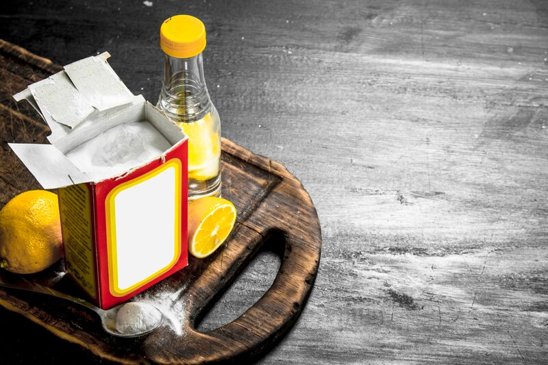
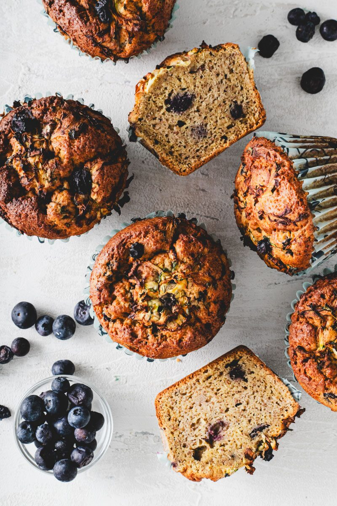

How Much Vinegar to Use in Baking (and Which One)
The one ingredient most people skip. What vinegar does in a bake, which kind to grab, and a chart for exactly how much to use with your baking soda.
- Vinegar reacts with baking soda for better rise, a tender crumb, and no metallic taste.
- Apple cider is the everyday default; skip malt vinegar for gluten-free.
- Cakes and muffins: 3–5% of your flour blend; cookies only 0.5–1.5%.
- Too much turns it sour and pale; too little leaves it soapy and flat.
Most people don't even use it. At our bakery it goes into nearly every single thing we make. And it's already sitting in your pantry.
It's vinegar. Good old-fashioned vinegar. Here's what it actually does in a bake, which one to grab, and exactly how much to use, because this is not one of those ingredients you can eyeball.
What vinegar does in your bake
Vinegar is an acid, mostly acetic acid diluted in water. That one fact is behind everything it does:
- It gives you a better rise. Baking soda is a base, and it needs an acid to react. Vinegar and soda meet in the batter and release carbon dioxide, and that gas is your lift. No acid, no reaction, and the soda just sits there.
- It tenderizes the crumb. Acid loosens up the protein structure, so you get a softer, more tender bite instead of a tight, chewy one.
- It cancels out that metallic baking soda taste. Leftover, unreacted soda is what tastes soapy and metallic. Give it enough acid and it gets used up instead of sitting on your tongue. This matters even more in gluten-free bakes, where we tend to lean harder on our leaveners.
- It makes everything taste brighter. A small hit of acid does for a cake what a squeeze of lemon does for a sauce. Chocolate tastes more like chocolate. Sweetness stops tasting flat.
And no, you're not going to taste vinegar. Most of it gets neutralized by the baking soda, and what's left is a small amount spread through the whole bake. Use the right amount and nobody will ever know it's in there.

Why you have to measure it
Because it's so strong, a little goes a long way, in both directions. Too little and you're back to flat, soapy bakes. Too much and two things happen:
- It turns sour. Once the soda is used up, every extra drop of acid is just acid.
- Your bake won't brown properly. Browning (the Maillard reaction) runs faster in a less acidic batter and slower in a more acidic one. Push the acid too far and you get a pale, washed-out bake.
That browning effect is also a tool. If you want a lighter, paler crumb, like a white cake or a vanilla cupcake, a little vinegar helps keep it that way. If you want a deep golden crust, go easy on it, or make sure there's enough soda to balance it out.

Which vinegar to use
They all bring the same acid. The differences are strength and flavor. Most grocery store vinegars are right around 5% acidity, and the numbers in the chart below are built on that.
| Vinegar | Typical acidity | Flavor | Best for |
|---|---|---|---|
| Apple cider | 5–6% | Mild and a little fruity | Our everyday default. Cakes, muffins, quick breads, cookies, vegan buttermilk. |
| Distilled white | 5% | Totally neutral | White and vanilla cakes, frostings, anywhere you want zero flavor and no color. |
| Red wine | 5–7% | Fruity, slightly tannic, tints pink | Chocolate cakes, red velvet, savory bakes. Use a touch less. |
| White wine | 5–7% | Clean and light | Light cakes, pie crusts, savory doughs. Use a touch less. |
| Rice | 4–4.5% | Very mild, slightly sweet | Delicate bakes. It's weaker, so use about 25% more. |
| Balsamic | ~6% | Sweet, dark, syrupy | Flavor only, in fruit fillings and glazes. Not for leavening, it'll muddy the color. |
| Malt | ~5% | Toasty, malty | Skip it for gluten-free. It's made from barley and is not gluten-free. |
One warning: "cleaning vinegar" is not food. It's often 6% or stronger and isn't made for eating. Keep it under the sink, not in your batter.

How much vinegar to use: the chart
Just like in my leaveners guide, these are baker's percentages. Everything is measured against your total flour-and-starch blend, which counts as 100%. Weigh your flour blend and multiply. If your blend is 300g and the chart says 4% vinegar, that's 300 × 0.04 = 12g of vinegar.
For the home column I used a recipe with about 2 cups (280g) of flour blend. Scale up or down from there.
| Bake | Vinegar (% of flour blend) | Baking soda (% of flour blend) | For 2 cups (280g) flour | Notes |
|---|---|---|---|---|
| Cakes & cupcakes | 3–5% | 0.5% | 2–3 tsp vinegar + ¼ tsp soda | Alongside your baking powder. Keeps vanilla cakes pale and tender. |
| Chocolate cake | 4–6% | 0.5–1% | 2½ tsp–1 tbsp vinegar + ¼–½ tsp soda | Brightens the cocoa. Red wine vinegar works great here. |
| Muffins & quick breads | 3–5% | 0.5–1% | 2–3 tsp vinegar + ¼–½ tsp soda | Our bakery muffins sit right around 4%. |
| Pancakes & waffles | 4–6% | 0.5% | 2½ tsp–1 tbsp vinegar + ¼ tsp soda | Stir it into your plant milk first to make vegan buttermilk. |
| Cookies | 0.5–1.5% | 0.5–1% | ¼–1 tsp vinegar + ¼–½ tsp soda | Keep it low. Brown sugar already brings acid, and you want the spread and the color. |
| Brownies & blondies | 0.5–1% | — | ¼–½ tsp vinegar | Flavor only. Makes the chocolate pop. |
| Pie crust | 3–5% | — | 2–3 tsp vinegar | Mix it into your ice water. Makes a more tender, flakier crust. |
| Yeasted breads & rolls | 0.5–1% | — | ¼–½ tsp vinegar | A little acid conditions the dough and helps it stay fresh a bit longer. |
| Frostings & glazes | 0.1–0.2% of the whole batch | A few drops to ¼ tsp | Cuts the flat sweetness. My chocolate frosting uses 1g. | |
Start in the middle of each range. Measuring by weight? 1 tsp of vinegar is about 5g, and ¼ tsp of baking soda is about 1.5g.

Vegan buttermilk
The easiest way to get vinegar into a recipe: 1 tbsp (15g) vinegar per 1 cup (240g) plant milk. Stir and let it sit 5 to 10 minutes. It'll thicken and curdle slightly. That's exactly what you want. Use it anywhere a recipe calls for buttermilk. Apple cider or distilled white both work, and soy milk curdles the best.
The quick rule for pairing vinegar with baking soda
If you want the math: about 14g of 5% vinegar fully neutralizes 1g of baking soda. That's roughly 5 tablespoons of vinegar for every teaspoon of soda.
You almost never need that much, because most batters already bring their own acid: brown sugar, cocoa, maple, yogurt, fruit. That's why the chart above sits well under full neutralization. In practice, most of my recipes land somewhere between 5 and 15 times the weight of the soda in vinegar.
Then let the bake tell you:
- Soapy or metallic, dense, overly dark? Not enough acid. Nudge the vinegar up.
- Sour, pale, won't brown? Too much. Pull it back.

Add it with your wet ingredients
Vinegar starts reacting with soda the second they meet, so mix it into your wet ingredients, keep your soda in the dry, and don't let the combined batter sit around with the leavener in it. Same rule as always: hydrate your batter first, add your leaveners last, and get it in the oven. More on that in add your baking powder last.
Try it in your next batch of muffins and tell me in the comments if you notice the difference. Thank you very much.
Keep going: Why Baking Soda and Baking Powder Are Not the Same, Why You Should Grind Down Your Baking Soda, DIY Yogurt Substitute for Baking.